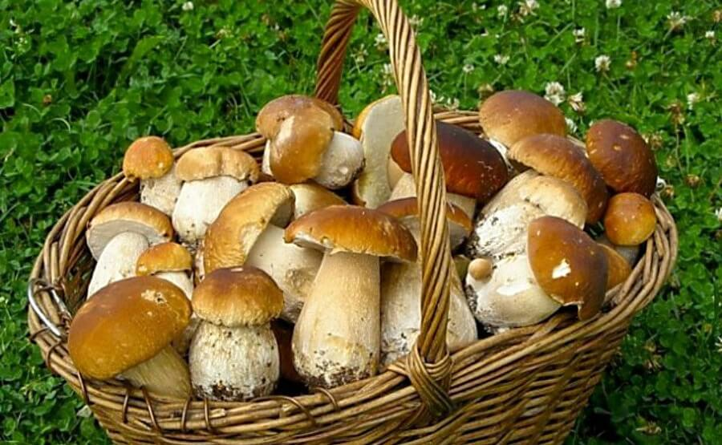

Лиственные леса могут состоять как из одной породы лиственных деревьев – березовые рощи, осинники, дубравы – так и из смеси пород. Для однородных лиственных лесов характерны виды грибов, живущие в симбиозе с этой породой дерева.
Березовые леса богаты различными грибами. Здесь обильно растут подберезовики, предпочитающие светлые места на опушках, полянах, вдоль дорог, на возвышенностях с изреженными деревьями. Подберезовик болотный растет в замшелых низинах и на поросших березой сфагновых болотах, вместе с сыроежкой болотной. В светлых и сухих березовых рощах нередко встречается подгруздок белый, растущий обычно группами, образующими широкие дуги – части огромных «ведьминых кругов».
Здесь же можно встретить многие разновидности сыроежек – синежелтую, зеленоватую, пищевую, красивую, ломкую – а также волнушку розовую и белую, грибызонтики, различные виды груздей, рядовок и говорушек. Летом во влажных молодых березняках, на березовых пнях растет опенок летний, а осенью – опенок осенний настоящий.
В светлых, изреженных березовых лесах встречается березовая разновидность белого гриба – крупный, плотный, красивый гриб с буроватой шляпкой. На живой березе растет чага, с давних пор используемая в народной медицине против заболеваний печени, различных воспалений желудка и кишечника. В березовых лесах с плодородной почвой обильно растут валуи. По окраинам заросших березняком болот встречаются поплавки, которые можно отличить от мухоморов по отсутствию кольца на ножке.
Из ядовитых грибов в березняках многочислен мухомор красный и мухомор пантерный, часто встречается и бледная поганка.
В дубовых лесах растет дубовик, синяк, полубелый гриб, каштановый гриб, моховики зеленый и трещиноватый, некоторые разновидности сыроежек. Дубовая разновидность белого гриба встречается по полянам и опушкам дубрав, обычно в старых лесах паркового типа. Из пластинчатых грибов здесь можно встретить млечник темнобурый, дубовый груздь, а также перечный груздь, растущий большими скоплениями даже в очень затененных местах.
Осенью у основания стволов или на стволах старых дубов вырастает печеночница – мясистый гриб овальной формы, достигающий нескольких килограммов. На корнях старых дубов растет трутовик листоватый или гриббаран, издали похожий на лежащую овцу. В молодом возрасте этот гриб съедобен.
Из ядовитых грибов для дубрав типичен ложноопенок кирпичнокрасный, заселяющий дубовые пни.
Чистые осинники обычно бедны грибами, но и для них есть свои характерные виды, такие, как подосиновик и осиновый груздь. Здесь можно встретить сыроежку синежелтую, иногда в больших количествах, и сыроежку невзрачную. Осиновые пни на вырубках – любимое место для поселения вешенки осенней, опенка осеннего и зимнего.
В смешанных лесах лиственных пород растет множество видов грибов. В широколиственных лесах встречаются различные виды вешенок, трутовиков и опят, подвишенник, сыроежки, белый гриб, полубелый и каштановый грибы. Мелколиственные леса изобилуют подберезовиками, подосиновиками, сыроежками и различными млечниками, среди которых груздь настоящий, желтый, черный, синеющий, валуй, скрипица и многие другие грибы.
Однако особенно богаты разнообразием грибов смешанные лиственнохвойные леса. В зависимости от состава древесных и кустарниковых пород здесь можно встретить любые грибы, растущие в симбиозе с ними. Для состава грибов в первую очередь имеют значение основные породы деревьев, а также возраст, густота и влажность леса. В сырых лесах с преобладанием березы и осины, с примесью ельника можно ожидать подосиновики, подберезовики, черные грузди и подгруздки, здесь же на вырубках растут опята и вешенки. В светлых, травянистых, умеренно влажных березовоосиновых лесах с плодородной почвой хорошо растут валуи и сыроежки. В сухих сосновоберезовых лесах, на мелкосопочнике растут белые, маслята, подберезовики, мелкие млечники, сыроежки, зеленушки и серушки. Весной в таких лесах на светлых, изреженных местах, особенно на старых пожарищах, появляются сморчки и сморчковые шапочки. Во влажных, заболоченных сосновоберезовых лесах, на черничниках, на сфагновых болотах растут моховики, козляк, болотные подберезовики, маслята и сыроежки, поплавки и мокрухи.
Для успешного сбора грибов нужно правильно выбирать лес. В сухой сезон, например, будет лучше отправиться за грибами во влажный лес, а в очень сырые сезоны, напротив, лучше предпочесть возвышенные места. Старые, густые, сумрачные леса обычно бедны грибами, как по составу, так и по количеству, а в молодом березнячке, едва переросшем кустарник, может оказаться множество самых различных грибов. В лесах с высокой, густой травой грибов, как правило, мало, поэтому нужно выбирать такие места, чтобы травы было немного и сквозь нее виднелась лесная подстилка.
Начинающему грибнику следует помнить, что большинство грибов предпочитает опушки, поляны, изреженные места, прогреваемые солнцем, и только очень немногие грибы, такие, как грузди или дубовики, лезут в чащу и на склоны оврагов. Неопытный грибник может набрать корзину самых разнообразных грибов, не заходя далеко в лес, но нужно хорошо их знать, чтобы оказаться в нужное время в нужном месте и выйти из леса с корзиной, полной белых грибов, рыжиков или груздей.